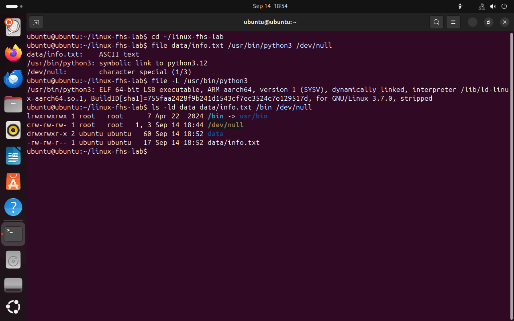
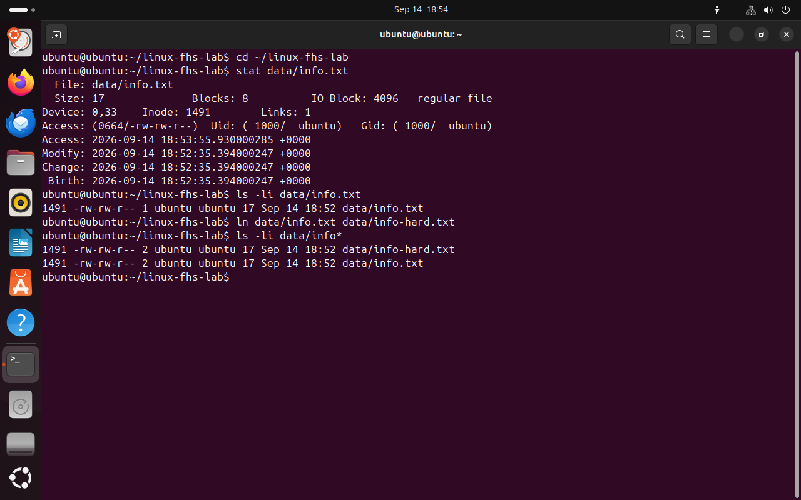
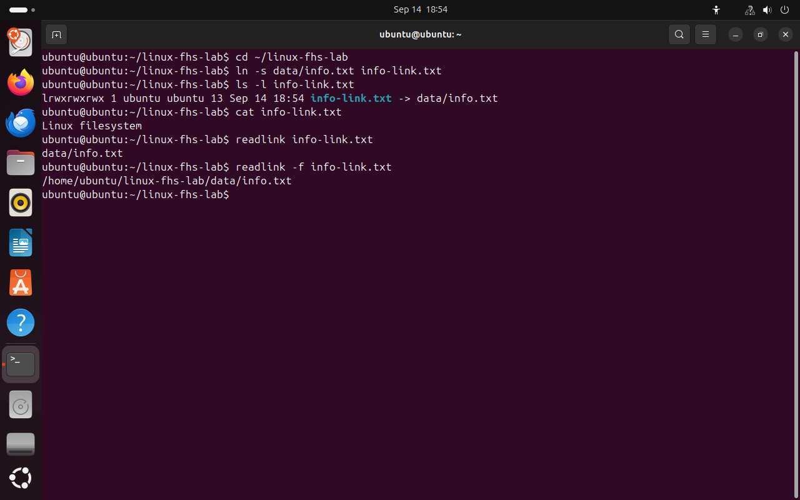
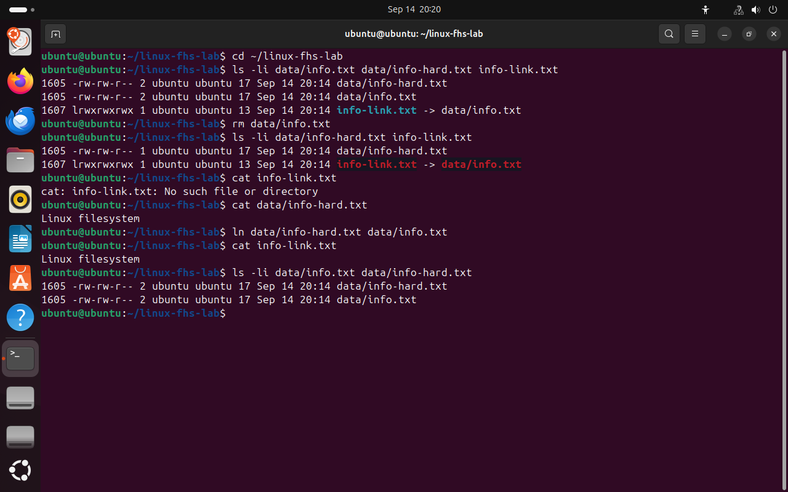

Часть 6 из 8
Типы файлов, inode и ссылки
В этой части рассмотрим типы объектов файловой системы, устройство inode и два вида ссылок: жёсткие и символические.
6.1 Типы объектов файловой системы
Каталоги, устройства и ссылки в Linux тоже являются объектами файловой системы, но разных типов. Тип обозначается первым символом строки в выводе ls -l.
| Символ | Тип объекта |
|---|---|
- | обычный файл |
d | каталог |
l | символическая ссылка |
c, b | символьное и блочное устройство |
s | сокет — файл для обмена данными между программами |
Тип объекта не говорит о содержимом обычного файла: и текстовый документ, и исполняемая программа имеют тип -. Содержимое определяет команда file, которая анализирует сами данные. Расширение имени в Linux на тип и содержимое файла не влияет.
cd ~/linux-fhs-labfile data/info.txt /usr/bin/python3 /dev/null# анализ содержимогоfile -L /usr/bin/python3# содержимое файла, на который указывает ссылкаls -ld data data/info.txt /bin /dev/null# четыре объекта разных типов
- 1file определил содержимое как текст
- 2символы типа: l, c, d, -
{kind=link}

Весь снимок ↗Объекты разных типов и результат команды file.
6.2 inode и жёсткие ссылки
Сведения о файле и его имя хранятся в разных местах. Тип, права доступа, владелец, размер, время изменения и расположение данных на диске записаны в структуре, которая называется inode. У каждого inode есть номер. Имени в inode нет: имена хранятся в каталогах. Каталог — это список соответствий «имя — номер inode».
Поскольку имя отделено от inode, на один inode могут указывать несколько имён. Дополнительное имя называется жёсткой ссылкой и создаётся командой ln. Все имена равноправны. В inode хранится счётчик ссылок; данные файла удаляются, только когда удалено последнее имя.
cd ~/linux-fhs-labstat data/info.txt# сведения из inodels -li data/info.txt# номер inode и число ссылокln data/info.txt data/info-hard.txt# создать второе имяls -li data/info*# сравнить два имени
- 1номер inode
- 2число ссылок до ln
- 3одинаковый номер inode у двух имён
- 4число ссылок после ln
{kind=link}

Весь снимок ↗Два имени указывают на один inode.
6.3 Символические ссылки
Символическая ссылка устроена иначе. Это отдельный объект со своим inode, в котором записан путь к другому файлу. При обращении к ссылке система переходит по записанному пути. Символическая ссылка может указывать на каталог или на файл в другой файловой системе, например /bin указывает на /usr/bin. Если файл по записанному пути удалить, ссылка перестанет работать.
cd ~/linux-fhs-labln -s data/info.txt info-link.txt# создать ссылкуls -l info-link.txtcat info-link.txt# чтение через ссылкуreadlink info-link.txt# путь, записанный в ссылкеreadlink -f info-link.txt# полный путь цели
- 1тип l
- 2записанный в ссылке путь
- 3текст целевого файла
{kind=link}

Весь снимок ↗Символическая ссылка хранит путь к файлу.
Разница между двумя видами ссылок видна, если удалить исходное имя data/info.txt. Жёсткая ссылка указывает на тот же inode, поэтому данные остаются доступны. Символическая ссылка хранит путь к удалённому имени и перестаёт работать. После повторного создания имени командой ln она снова работает.
cd ~/linux-fhs-labls -li data/info.txt data/info-hard.txt info-link.txt# исходное состояниеrm data/info.txt# удалить одно имяls -li data/info-hard.txt info-link.txt# после удаления имениcat info-link.txt# чтение через символическую ссылкуcat data/info-hard.txt# чтение через жёсткую ссылкуln data/info-hard.txt data/info.txt# вернуть имяcat info-link.txtls -li data/info.txt data/info-hard.txt# имён снова два
- 1у файла осталось одно имя
- 2ссылка указывает на несуществующий путь
- 3ошибка при чтении через символическую ссылку
- 4данные доступны через жёсткую ссылку
{kind=link}

Весь снимок ↗После удаления имени жёсткая ссылка сохранила доступ к данным, символическая перестала работать.
Итоги части 6
- Тип объекта обозначается первым символом в
ls -l; содержимое определяетfile. - Сведения о файле хранятся в inode, имя — в каталоге.
- Жёсткая ссылка — дополнительное имя того же inode; данные удаляются вместе с последним именем.
- Символическая ссылка хранит путь и перестаёт работать, если по этому пути нет файла.
В отчётСнимки ls -li с одинаковыми номерами inode и опыта с удалением имени.